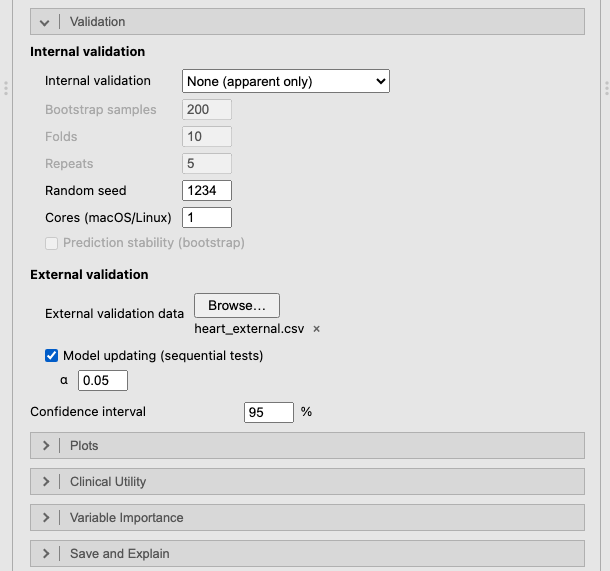
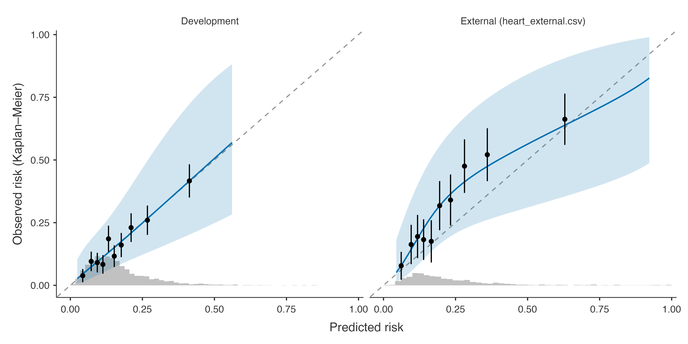
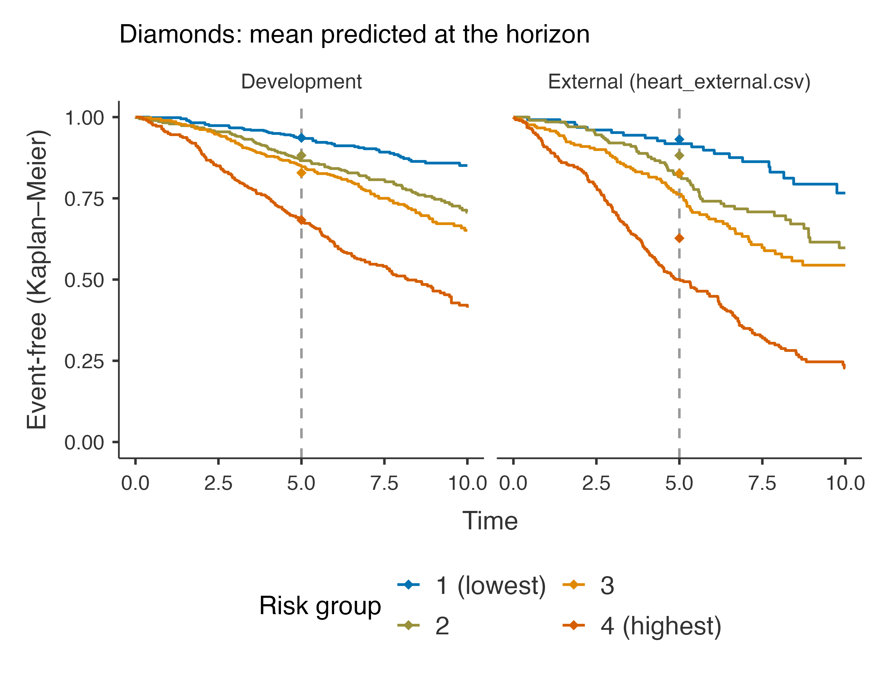
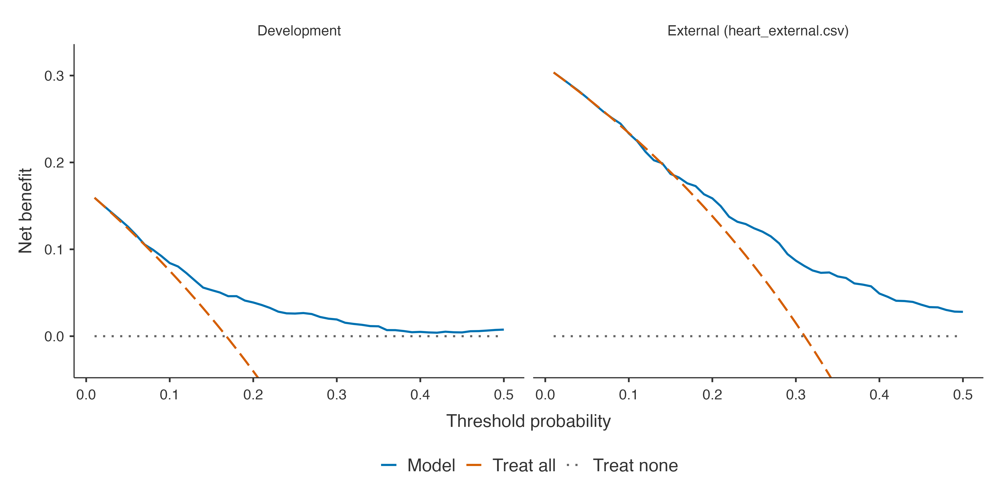

The 5-year risk of a cardiovascular event from censored follow-up: the horizon, concordance and time-dependent AUC, calibration at the horizon, Kaplan–Meier risk groups, external validation and updating.
Question. Patients are followed for different lengths of time, and many leave the study without an event (they are censored). Instead of an event within 10 years, can we predict the risk of an event by 5 years, using every patient’s follow-up?
Bootstrap, 100 samples; external data heart_external.csv; Model updating
Clinical Utility
Decision curve
Plots
Calibration plot, Kaplan–Meier by risk group

Figure 1: The Validation section of the Cox panel: the external file and model updating by sequential tests.
The horizon turns the Cox model into a risk model: the predicted risk is 1 − S₀(5)^exp(PI), where PI is the prognostic index (the linear predictor) and S₀(5) the baseline event-free probability at 5 years, estimated with the model (Efron’s estimator). Choose a horizon that is clinically relevant and well inside the follow-up; with 0, clinpred uses the median follow-up (reverse Kaplan–Meier (Schemper and Smith 1996)).
Note. Event: status = event. Risks are predicted by the horizon t = 5. Rows with a missing time, event or predictor are excluded (complete-case analysis).
Hazard Ratios
Crude
Adjusted
HR
Lower
Upper
p
HR
Lower
Upper
p
sbp
per 10 units
1.24
1.179
1.31
< .001
1.21
1.149
1.28
< .001
chol
per unit
1.11
1.025
1.20
.010
1.17
1.076
1.27
< .001
bmi
per unit
1.04
1.016
1.05
< .001
1.03
1.008
1.05
.006
age
Q3 vs Q1 (66 vs 53)
1.20
0.955
1.50
< .001
1.43
0.992
2.06
< .001
sex
female
1.00
< .001
1.00
< .001
male
1.49
1.259
1.76
< .001
1.50
1.185
1.90
< .001
smoking
never
1.00
< .001
1.00
< .001
former
1.17
0.961
1.44
.116
1.23
1.006
1.51
.043
current
2.17
1.784
2.64
< .001
2.24
1.841
2.73
< .001
diabetes
no
1.00
< .001
1.00
< .001
yes
1.92
1.492
2.46
< .001
1.86
1.438
2.40
< .001
Note. Crude: each predictor alone, on the same rows. Adjusted: in the prediction model.
Note. Spline predictors: hazard ratio between the third and the first quartile; the p is the likelihood ratio test of the whole (non-linear) association.
Note. The p on a factor's reference row is the likelihood ratio test of the factor.
Note. With interactions, an adjusted hazard ratio is the effect at the reference level (factor) or median (covariate) of the variables it interacts with; see Effects Within Subgroups.
The Risk by horizon (KM) column is the Kaplan–Meier estimate of the 5-year risk, which accounts for censoring; the crude share of events does not. The hazard ratios read like the odds ratios of the logistic model; with the age × sex interaction, the ratios for age and sex are at the reference level and median of the other (women; median age).
Note. Harrell's C: probability that, of two comparable patients, the one with the event first has the higher predicted risk. Uno's C: the same, weighted for censoring and restricted to the horizon. Time-dependent AUC: discrimination between events by t = 5 and patients event-free at t (censoring weighted). Royston's D: separation in log hazard between the halves of the prognostic index. O/E: observed (Kaplan–Meier) / mean predicted risk at t. Calibration slope: 1 is ideal; below 1 the predictions are too extreme. ICI, E50, E90: mean, median and 90th percentile absolute difference between predicted and observed risk at t (smoothed by a Cox model on a spline of the predicted risk). Brier: censoring-weighted mean squared error at t; scaled Brier (index of prediction accuracy): 1 − Brier / Brier of the Kaplan–Meier risk.
Discrimination: Harrell’s C uses every pair of patients whose order of events is known; Uno’s C and the time-dependent AUC focus on events by 5 years (Uno et al. 2011). Corrected for optimism, Harrell’s C is 0.674. Calibration at the horizon compares the predicted 5-year risk with the Kaplan–Meier risk; the calibration curve comes from a Cox model on a spline of the predicted risk (Austin et al. 2020). The scaled Brier score is the index of prediction accuracy (Kattan and Gerds 2018), the Brier score being weighted for censoring (Graf et al. 1999).


The Kaplan–Meier curves of the risk groups (quartiles of the predicted risk in the development data) should separate, and each group’s observed curve should pass through its mean predicted event-free probability at the horizon (the diamonds) (Royston and Altman 2013). In the external cohort the curves fall below the diamonds: the model under-predicts there.
Step 4: external validation and updating
Performance in the Validation Data
95% CI
Data set
Measure
Estimate
Lower
Upper
External (heart_external.csv)
Discrimination
Harrell's C
0.6960
0.669
0.723
Uno's C (to the horizon)
0.7036
Time-dependent AUC (at the horizon)
0.7434
Royston's D
1.1215
0.954
1.290
Calibration
O/E ratio (at the horizon)
1.3620
1.232
1.505
Calibration slope
0.7567
0.649
0.864
ICI
0.0887
E50
0.0968
E90
0.1315
Overall
Brier score (at the horizon)
0.1898
Scaled Brier score (IPA)
0.1132
Royston's R²_D
0.2309
Nagelkerke R²
0.1424
Cox–Snell R²
0.1417
Note. The development model, with its baseline hazard, is applied unchanged to the validation data. An O/E far from 1 means the overall risk at the horizon differs between the populations; a slope below 1, that the predictions are too extreme there.
Model Updating in the Validation Data
Sequential test
Data set
Method
Parameters
Shift
Slope
χ²
df
p
Chosen
Harrell's C
O/E
Brier
External (heart_external.csv)
Original model
0
0.0000
1.000
0.696
1.362
0.190
Recalibration in the large
1
0.3268
1.000
36.5
1
< .001
0.696
1.067
0.181
Recalibration
2
0.0831
0.757
21.0
1
< .001
0.696
1.006
0.181
Model revision
14
29.4
12
.003
✓
0.703
0.994
0.175
Note. Recalibration in the large re-estimates the baseline risk at the horizon (the original linear predictor as offset); recalibration also its slope; revision refits every coefficient. Shift and slope: of the original linear predictor in the updated model. The partial likelihood does not involve the baseline risk, so the closed testing procedure is adapted into sequential tests (each p in the row of the more complex method): revision vs recalibration and slope = 1 by partial likelihood ratio, O/E at the horizon = 1 by a Wald test; the most complex method whose test is significant at α = 0.05 is chosen (✓). Performance of an updated model is measured in the data used to update it, so it is optimistic, most of all for revision.
In the external cohort the model discriminates as well (C 0.696), but under-predicts the 5-year risk (O/E 1.36) and its predictions are too extreme (slope 0.76).
Updating a Cox model re-estimates the baseline risk at the horizon (recalibration in the large), also the slope of the prognostic index (recalibration), or every coefficient (revision) (Houwelingen 2000). Because the partial likelihood ignores the baseline risk, clinpred tests sequentially from the most complex method down (see validation): here revision is significantly better than recalibration (p = 0.003), so the effects themselves differ in that population, as the external case-mix suggested.
Step 5: clinical utility
Net Benefit (at the Horizon)
Data set
Threshold
Model
Treat all
Gain
Interventions avoided per 100
Development
0.0500
0.1261
0.1240
0.00212
4.031
0.1000
0.0842
0.0753
0.00891
8.019
0.2000
0.0388
-0.0403
0.03880
31.639
External (heart_external.csv)
0.0500
0.2744
0.2742
0.00018
0.340
0.1000
0.2334
0.2339
-0.00055
-0.495
0.2000
0.1587
0.1381
0.02052
8.208
Note. Net benefit at t = 5, with the event risks above each threshold estimated by Kaplan–Meier (censoring accounted for): true positives/N − false positives/N × p/(1 − p) at threshold p. Gain: over the better of treating all and treating none.

The net benefit at 5 years uses Kaplan–Meier risks among the patients above each threshold, so censored patients count correctly. In the external cohort, where a quarter of patients have an event, treating everyone is about as good as using the model at low thresholds; the model helps from about 20%.
Austin, Peter C., Frank E. Harrell, and David van Klaveren. 2020. “Graphical Calibration Curves and the Integrated Calibration Index (ICI) for Survival Models.”Statistics in Medicine 39 (21): 2714–42. https://doi.org/10.1002/sim.8570.
Kattan, Michael W., and Thomas A. Gerds. 2018. “The Index of Prediction Accuracy: An Intuitive Measure Useful for Evaluating Risk Prediction Models.”Diagnostic and Prognostic Research 2 (1). https://doi.org/10.1186/s41512-018-0029-2.
Royston, Patrick, and Douglas G Altman. 2013. “External Validation of a Cox Prognostic Model: Principles and Methods.”BMC Medical Research Methodology 13 (1). https://doi.org/10.1186/1471-2288-13-33.
Schemper, Michael, and Terry L. Smith. 1996. “A Note on Quantifying Follow-up in Studies of Failure Time.”Controlled Clinical Trials 17 (4): 343–46. https://doi.org/10.1016/0197-2456(96)00075-x.
Uno, Hajime, Tianxi Cai, Michael J. Pencina, Ralph B. D’Agostino, and L. J. Wei. 2011. “On the c-Statistics for Evaluating Overall Adequacy of Risk Prediction Procedures with Censored Survival Data.”Statistics in Medicine 30 (10): 1105–17. https://doi.org/10.1002/sim.4154.